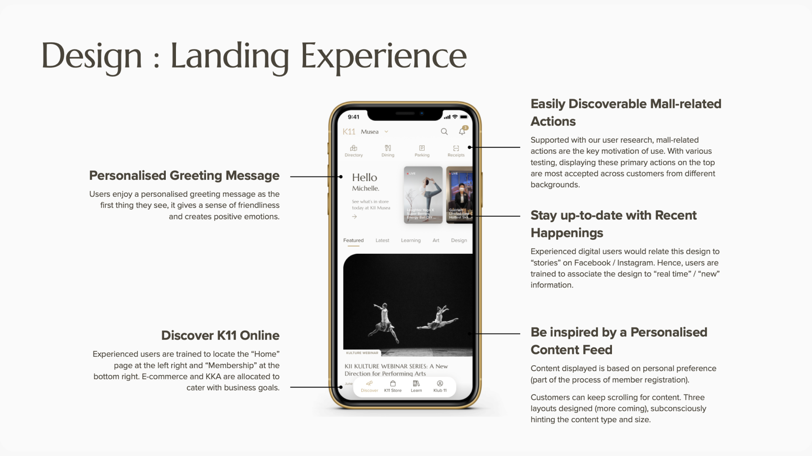
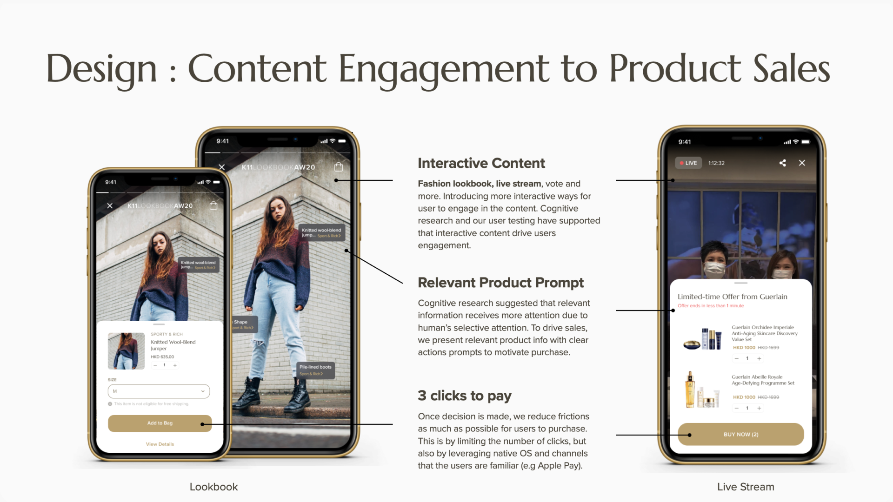
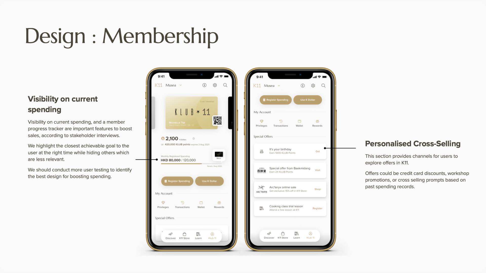

Retail Mall App
K11 is a Hong Kong retail group with a membership app covering loyalty points, dining reservations, online purchases, and mall navigation. The company wanted a full revamp. I led the research and design process, defining the strategic direction through stakeholder interviews, in-context user research, and rapid prototype testing with real mall visitors.

Research
I started research in-context: spending time at the concierge desk to observe how visitors actually encountered problems, and reviewing app store feedback to identify the highest-frequency complaints. This gave me a grounded problem frame before any stakeholder conversations.

Stakeholder interviews with the K11 team clarified the business objectives: Engagement, Sales, and Loyalty. These were not equally weighted, the company saw content as the lever for all three, and wanted the app to function as a dynamic content platform rather than primarily a transactional utility. That framing shaped the entire design direction.

I designed two distinct prototypes based on the research and tested them with mall visitors in the food court, sampling across membership status, app awareness, and visit motivations. The testing was conducted in the actual context of use, which produced richer and more reliable feedback than lab-based alternatives. Findings from testing resolved the directional choice between the two concepts.
Launch
The design was finalised within a one-month sprint and handed to development. The revamped K11 app launched on Google Play and the App Store within three months.



